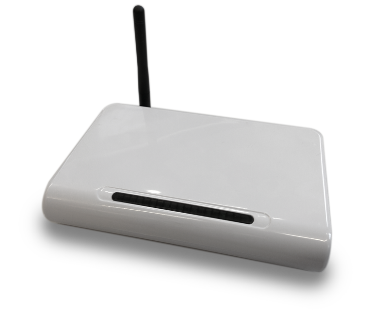
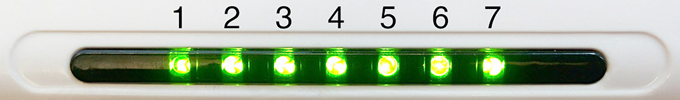
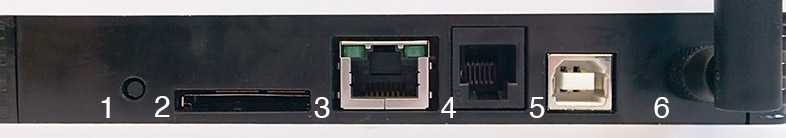
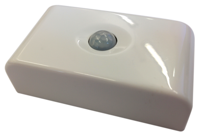
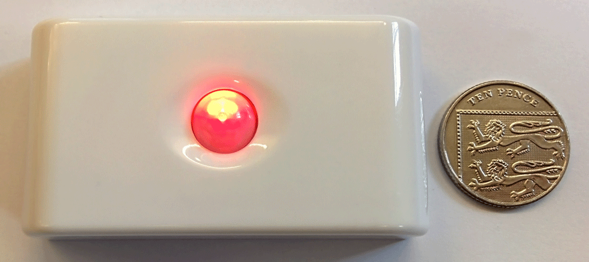

LRS
The BuildAX LRS (Logger Router Server) is primarily a data-logger , but has a lot of extra functionality which you may find useful in a wide range of deployment scenarios.

LED codes

The BuildAX LRS includes 7 LEDs which indicate the status of the device:
| LED | Function |
|---|---|
| 1 | Power |
| 2 | USB CDC (Serial connection available) |
| 3 | Network Connectivity |
| 4 | SD Card Mounted |
| 5 | Log File Activity |
| 6 | 433MHz Radio Activity |
| 7 | Remote connection (telnet) active |
LRS LED Flash Codes
There are a number of situations where a flashing pattern will be displayed on the LRS LEDs:
| Pattern | Meaning | Action |
|---|---|---|
| Odd/Even LEDs flash alternately | Pairing Mode | Hold the button on the rear of the LRS for 1 second. The LRS will enter pairing mode. Proceed to pair up BuildAX sensors. |
| 2 groups of 3 LEDs flash alternately | Mount USB device | Hold the button on the rear of the device for 5 seconds. This will mount (or unmount) the USB disk, and re-initialise the filesystem. The Si44 Radio will also be re-initialised. |
| All LEDs flash quickly, twice | Load Factory Defaults | Hold the button on the rear of the LRS for 10 seconds. This will reset the device to factory defaults but will not wipe files from the SD card (sensors will remain paired). |
| LEDs flash counting up from 1-7 continually | Bootloader Mode | The device is in bootloader mode. This is triggered by holding the button on the rear of the device while the power is being connected. See the Firmware page for more info. |
| All LEDs flash slowly, continuously | General Exception | A fatal LRS firmware error occurred. This usually signifies that there is a bug which will need to be fixed. Please send us your ERRORS.TXT from the SD card to help diagnose the problem. |
Connections

| No. | Function | Description |
|---|---|---|
| 1 | Pairing Button | Used to make the LRS enter pairing mode, in which BuildAX sensors may be paired to the device. |
| 2 | SD Card Slot | Accepts any SD card formatted with the FAT filesystem |
| 3 | Ethernet Jack | Used for connecting the BuildAX LRS to a TCP/IP network |
| 4 | Debugger Jack | Debugging interface for firmware development |
| 5 | USB B Jack | Provides power to the LRS. Also exposes a USB CDC Serial connection and Mass Storage Device to access the SD card |
| 6 | 433MHz Antenna | 433MHz Radio receives data packets from BuildAX sensors |
Sensors
BuildAX ENV
The BuildAX LRS is designed to receive data from a variety of sensor nodes. The currently available device is the BuildAX ENV (environmental sensor node).

This is a small, indoor environment sensor which transmits the following values:
- Temperature
- Humidity
- Light
- PIR (Passive Infrared movement sensor)
- Magnetic Reed Switch
Front

The PIR sensor by default shows a red LED when triggered, similar to those found in security/alarm systems. This indicates that the sensor node is working correctly.
A green LED is displayed when the magnetic switch is triggered, or when the button inside the device is pressed to send an encryption packet.
Rear
The back panel of the device is removed to reveal the battery compartment and other components.

| No. | Function | Description |
|---|---|---|
| 1 | FTDI Header | A connector used to configure the device, and program the BuildAX Sensor firmware |
| 2 | Pairing Button | Press this to send the sensor's encryption packet. See Pairing Sensors for full instructions on pairing sensors to the LRS. |
| 3 | Antenna | 433MHz Radio antenna for sending BuildAX sensor data to the LRS wirelessly. |
| 4 | Battery Holder | Two AAA (triple A) batteries power the BuildAX sensor, expected battery life is over a year with the default configuration |
| 5 | Temperature Sensor | Temperature sensor (1% accuracy point-matched thermistor) |
| 6 | Humidity Sensor | Humidity sensor (5% accuracy between 20-90% RH) |
The inclusion of a magnetic switch allows the sensor to be mounted on a door or window frame, and transmit data on whether the aperture is open or closed.
A magnet similar to those used on cupboard doors should trigger the switch, and should be aligned on the opposite side of the device to the antenna.
ENV LED Flash Codes
| Pattern | Meaning |
|---|---|
| RED flash | PIR event (event detected) |
| GREEN flash | Magnetic switch event (either direction of magnet movement) |
| RED-GREEN-RED-GREEN-RED-GREEN flash | Device reset(e.g. reset command or new batteries) |
| GREEN-OFF-GREEN-OFF-GREEN-OFF | Device settings invalid or encryption+id changed (e.g. button hold + new batteries) |
| RED dim flicker at 1 Hz | Device battery depleted (remove depleted cells to avoid cell leakage) |
Device control
| Pattern | Meaning |
|---|---|
| Press button ( <10 seconds) |
|
| Hold button for 10 seconds |
|
| Connect cable and press button | Device enters settings mode immediately |
| Insert batteries while holding button | Device factory resets AND generates new id and encryption |
Sensor Specification
Full specification of the BuildAX ENV sensor hardware:
Battery power
- 2 standard AAA cells
- Battery life depends on usage and location e.g. for a 900 mAh typical alkaline battery:
- Sensor sample every minute + 1 event every minute = ~0.5 Years
- Sensor sample every 5 minutes + 50 events per day = ~3.0 Years
Temperature
- -10 to 50°C ±2°C
- -7 to 47°C ±1°C
- 0.1°C resolution
Humidity
- 20 to 90% Saturation
- 5 to 60°C
- 5% accuracy
- 0.1% resolution
Light
- Linear sensor with ±30% gain error max
- Typical gain error ±10%
- Fluorecent lamp flicker filter
- 2 point calibration possible for more accuracy
- 1000 Lux range
- 1 Lux resolution
PIR
- PIR energy integrator indicates total movement
- PIR events count movement detections
- Events can trigger transmit of data
Magnetic switch
- Reed switch magnetic sensor
- Switch events are generated when the magnetic field changes accross threshold
- Events can trigger transmit of data
- Events accumulate with LSB set to switch state.
- 0 = magnet present, 1 = magnet not present
Radio
- Si4032 433 MHz chipset
- Centre frequency is 434 MHz, 2GFSK 62.5KHz deviation
- -96 dBm sensitivity, ±210 kHz MOD BW, +10dBm Tx power (0 - 20dBm configurable)
- AES encryption